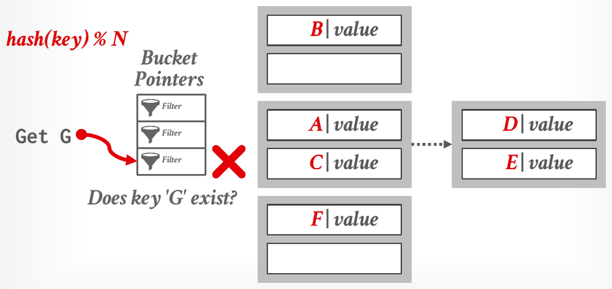
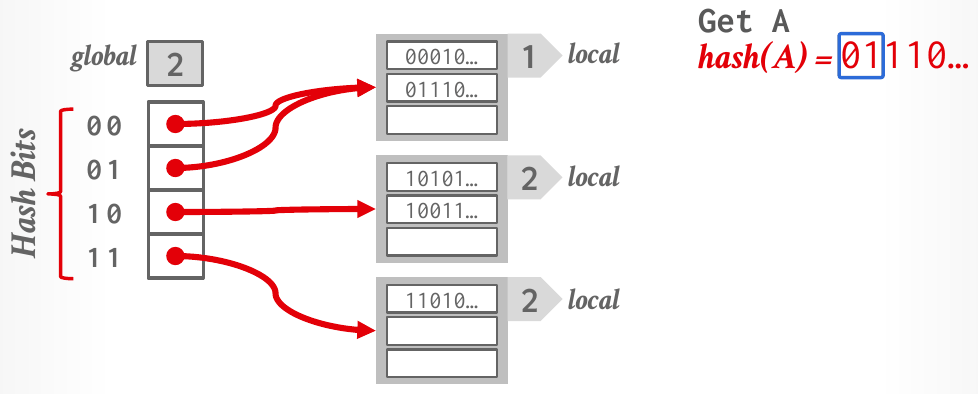

Database Internals in Go · Unit 3 · Lesson 2
Dynamic Hashing: Chained, Extendible, and Linear
Trace how chained, extendible and linear hashing grow a table without rebuilding it, including directory doubling and local depths in extendible hashing and the split pointer in linear hashing.
The static tables of the last lesson must know how many keys they will hold. When they fill up, the DBMS builds a new table twice as large and rehashes everything, which is very expensive. Dynamic hashing schemes resize themselves a little at a time instead. Lecture #07 presents three of them, and HW3's Question 2 makes you trace the middle one, extendible hashing, key by key.
Unit 1, Lesson 5: why can't a dictionary for dictionary compression be a plain hash function?
Unit 2, Lesson 2: what is sequential flooding?
Unit 2, Lesson 6: a function takes a read guard and writes defer guard.Drop() on the next line. When does Drop run?
Chained hashing
The notes call chained hashing the most common dynamic hashing scheme. The table is an array of slots, and each slot points to a linked list of buckets, fixed-size containers of entries (in a disk-based table, a bucket is a page). Keys that hash to the same slot go into that slot's chain. A lookup hashes to a slot and scans its chain. When a chain's last bucket is full, the DBMS links another bucket to it; in the slide's build, with two entries per bucket, D arrives at the full bucket holding A and C, so a new bucket is chained to it, and E joins D there.

Get G stops at the filter. Lesson 6 covers the Bloom filter, the usual structure for this job (Lecture #07, slide 24).Chains can grow without limit, though, and a long chain makes every lookup on that slot slow. The next two schemes split buckets instead.
#07 Database Hash Tables, "Chained Hashing" (46:53), slides 22–24: static versus dynamic tables, the bucket chains, and the filters on bucket pointers.
Extendible hashing
Extendible hashing is chained hashing that splits a full bucket instead of letting its chain grow forever. The slot array becomes a directory, and several directory slots may point to the same bucket. Two counters decide where keys go:
- The global depth is the number of hash bits used to pick a directory slot. A directory with global depth g has 2g slots.
- Each bucket has a local depth: the number of hash bits that all keys in the bucket agree on. A local depth never exceeds the global depth, and a bucket with local depth d is shared by 2g−d directory slots.
When a key arrives at a full bucket, the DBMS splits that bucket and redistributes its keys using one more bit. Which case applies depends on the bucket's local depth:
- If the local depth is less than the global depth, several slots share the bucket. The split creates a new bucket, both get local depth d + 1, and the slots that shared the old bucket are divided between the two. The directory stays the same size.
- If the local depth equals the global depth, only one slot points to the bucket, so there is no slot to give the new bucket. The DBMS first doubles the directory and increments the global depth, a step called directory doubling, and then splits as above.
Either way, only the keys of the split bucket move; every other bucket stays where it is. The slide puts it as "data movement is localized to just the split chain". If all the keys still land on one side of the split, the bucket is still full and the process repeats, so one insert can double the directory several times.
Which bits: leading bits on the slides, lowest bits in HW3 and BusTub
The slides and notes index the directory with the leading (most significant) bits of the hash: in the figure below, hash(A) = 01110… goes to slot 01. HW3 says its hash "uses the lowest g bits", and BusTub's extendible hash table directory page computes the slot as Hash(key) & GLOBAL_DEPTH_MASK, a mask with g ones "from LSB upwards". (That BusTub code belongs to an earlier semester's project; Fall 2025's Project 2 is a B+tree.) The algorithm is the same either way. Only the picture of the directory changes:
- With leading bits, doubling turns slot
abintoab0andab1, so the slots that share a bucket sit next to each other. - With the lowest bits, doubling copies the directory: new slot i + 2g points to the same bucket as slot i. Slots that share a bucket are spread out, which is why HW3's solution writes "b1,3 = 3": slots 1 and 3 share the bucket holding 3.
For HW3 and the quiz below, use the lowest g bits.

Get A reads the first two bits of its hash, 01, and follows that slot (Lecture #07, slide 26).The slide's build continues. Put B (hash 10111…) fills the bucket of slot 10. Put C (hash 10100…) arrives at the same full bucket, whose local depth, 2, equals the global depth, so the directory doubles to global depth 3. The bucket splits on the third bit into slot 100's bucket {10011…} and slot 101's bucket {10101…, 10111…}, both with local depth 3. The other buckets keep their entries; more slots now point to them. Then Put C is retried and lands in slot 101's bucket.
![The same table after Put C. Global depth 3. The directory slots are listed in the order 000, 010, 100, 110, 001, 011, 101, 111. Slots 000, 010, 001 and 011 point to the local-depth-1 bucket holding 00010… and 01110…. Slot 100 points to a local-depth-3 bucket holding 10011…. Slot 101, marked by a red arrow, points to a local-depth-3 bucket outlined in red holding 10101…, 10100… and 10111…. Slots 110 and 111 point to a local-depth-2 bucket holding 11010…. On the right: Get A, hash(A) = 01110…; Put B, hash(B) = 10111…; Put C, hash(C) = 10100…, with 101 boxed.](../assets/slides/L07-extendible-after-doubling-p78.png)
A trace with the lowest bits
Take HW3's rules (buckets of 2 records, the lowest g bits, and a new table with g = 0 and one empty bucket) and insert 1, 3, 5 and 7.
- 1 and 3 fill the only bucket.
- 5 finds it full. Its local depth, 0, equals g = 0, so the directory doubles to g = 1 and the bucket splits on bit 0. Keys with bit 0 = 0 go to slot 0's bucket, those with bit 0 = 1 to slot 1's. 1 and 3 are both odd, so slot 0's bucket is empty and slot 1's holds {1, 3}, both at local depth 1. 5 is retried and finds slot 1's bucket full again.
- Its local depth, 1, equals g = 1, so the directory doubles to g = 2. Slot 2 copies slot 0 and slot 3 copies slot 1. The full bucket splits on bit 1: 1 (binary 01) stays with slot 1, 3 (binary 11) moves to a new bucket for slot 3, both at local depth 2. 5 (binary 101, lowest two bits 01) now fits in slot 1's bucket.
- 7 (binary 111, lowest bits 11) goes to slot 3's bucket.
The result has g = 2: slot 1 → {1, 5} and slot 3 → {3, 7}, both at local depth 2, while slots 0 and 2 share an empty bucket at local depth 1. One insert, 5, caused two doublings.
#07 Database Hash Tables, "Extendible Hashing" (51:04), slides 25–26: the directory, global and local depths, and the Put C build with directory doubling.
Linear hashing
Linear hashing also splits buckets, but it doesn't always split the bucket that overflowed. The table keeps a split pointer to the next bucket to split. When any bucket overflows, the overflowing key goes into an overflow bucket chained to the full one, and the DBMS splits the bucket at the split pointer. The notes leave the overflow criterion to the implementation; the slide mentions space utilization and the average length of overflow chains. The slide lists PostgreSQL, BerkeleyDB and Amazon DynamoDB as systems that use linear hashing.
The slide's example starts with n = 4 buckets of 3 slots, hash1(key) = key % n, buckets 0 → {8, 20}, 1 → {5, 9, 13}, 2 → {6} and 3 → {7, 11}, and the split pointer at bucket 0.
Put 17: hash1(17) = 1, and bucket 1 is full, so 17 goes into an overflow bucket chained to bucket 1.- That overflow triggers a split of bucket 0, the one at the pointer. The DBMS adds bucket 4 and a second hash function,
hash2(key) = key % 2n, and rehashes bucket 0's keys with it: hash2(8) = 0 stays, hash2(20) = 4 moves to bucket 4. The pointer advances to bucket 1.
![Linear hashing after Put 17. A dotted line marks the split pointer between bucket pointers 0 and 1. Bucket 0 holds 8. Bucket 1 holds 5, 9 and 13, with an overflow bucket holding 17. Bucket 2 holds 6. Bucket 3 holds 7 and 11. A new pointer 4, drawn in blue, points to a bucket holding 20, outlined in red. Formulas: hash1(key) = key % n, hash2(key) = key % 2n. On the right: Get 6, hash1(6) = 6 % 4 = 2. Put 17, hash1(17) = 17 % 4 = 1, hash2(8) = 8 % 8 = 0, hash2(20) = 20 % 8 = 4. Get 20, hash1(20) = 20 % 4 = 0, hash2(20) = 20 % 8 = 4.](../assets/slides/L07-linear-hashing-split-pointer-p93.png)
Get 20 computes hash1(20) = 0, which is above the dotted line (below the split pointer), so it uses hash2(20) = 4 instead (Lecture #07, slide 28).Lookups use one rule: compute hash1; if the result is a bucket that has already been split this round, that is, below the split pointer, use hash2 instead. Get 9 computes hash1(9) = 1, which isn't below the pointer, so it reads bucket 1 (and its overflow chain).
Splitting at the pointer eventually reaches every bucket that has overflowed. When the pointer reaches the last slot, the DBMS deletes the original hash function, so hash2 becomes the only one, and moves the pointer back to the beginning. Linear hashing can also shrink. If the highest bucket below the pointer becomes empty, the DBMS removes it and moves the pointer backwards. In the slide's example, deleting 20 empties bucket 4, so bucket 4 is removed, hash2 is dropped and the pointer returns to 0; a later Put 21 overflows bucket 1 again. The notes name the advantage: the table grows or shrinks incrementally, without the high cost of a full rebuild.
#07 Database Hash Tables, "Linear Hashing" (58:36), slides 27–30: the split pointer, the Put 17 example, resizing, and deletes that shrink the table. Lecture #08 opens with a review of extendible and linear hashing: #08 B+Trees, "Dynamic hash tables review" (5:27), Lecture #08 slides 5–11.
Why indexes are usually trees
Lecture #07 ends by saying that hash tables are fast, O(1) on average, and used all through DBMS internals, but usually not what you want for a table index. A hash table can't answer a range query or walk keys in order. PostgreSQL's CREATE INDEX ON xxx (val) builds a B+tree by default; a hash index must be asked for with USING HASH. The next lesson starts on the B+tree.
Work it out
The first two exercises use HW3's extendible hashing rules: buckets of 2 records, the lowest g bits, a new table with g = 0 and one empty bucket, and keys inserted left to right.
-
What to think about
When does a bucket split? Does the new table's one bucket ever fill up past its capacity here?
The method
The only bucket holds 2 records, so both keys fit and nothing splits. Both depths keep their starting values.
The result
Global depth 0, and local depth 0. The official solution: no split has occurred yet, because the first bucket can hold 2 arbitrary values.
-
What to think about
Write the keys in binary. How many low bits do 8, 16 and 4 have in common? A split can't separate keys until it reaches a bit where they differ.
The method
8 = 01000, 16 = 10000, 4 = 00100. Inserting 4 overflows the first bucket; keep doubling and splitting until 4 separates from 8 and 16. Then place 2 = 00010 by its lowest g bits.
The result
Global depth 3. Slot 0 → {8, 16} and slot 4 → {4}, both at local depth 3; slots 2 and 6 → {2} at local depth 2; slots 1, 3, 5 and 7 share an empty bucket at local depth 1.
-
What to think about
For each key, is hash1's result below the split pointer? And when a bucket overflows, which bucket splits?
The method
hash1(4) = 0 is below the pointer, so use hash2. 15 and 23 both have hash1 = 3. When bucket 3 overflows, split the bucket at the pointer with hash2 = key % 8, including its overflow chain, then advance the pointer.
The result
4 goes to bucket 4 (hash2(4) = 4), giving {20, 4}. 15 fills bucket 3: {7, 11, 15}. 23 overflows bucket 3 into an overflow bucket, which splits bucket 1: 9 and 17 stay (hash2 = 1), 5 and 13 move to a new bucket 5. The pointer ends at 2, and bucket 3 keeps its overflow chain {23} until its turn.
The homework behind these questions
The questions marked HW3 come from CMU's Homework #3: Question 2, with the original figures. Work each one out on paper first, then click the option you got. The quiz tells you at once whether it matches CMU's official answer, and explains why. To compare your working step by step, open the official solutions for Question 2.
Check your understanding
HW3 Question 2, parts (b) to (f), with the same rules as the exercises. Each part starts where the previous one ends, beginning from the table of Q2(a), which holds {10, 20} at g = 0.
HW3 Q2(b): insert 3 and then 4. What is the global depth, and what are the local depths of the buckets holding 3, 4, 10 and 20?
HW3 Q2(c): starting from (b)'s table, insert 0 and then 12. What is the global depth, and what are the local depths of the buckets holding 0 and 12?
HW3 Q2(d): (c)'s table has g = 4. Slots 0 and 8 share {0} at depth 3; slots 2, 6, 10 and 14 share {10} at depth 2; all odd slots share {3} at depth 1; slot 4 → {4, 20} and slot 12 → {12}, both at depth 4. Which keys, inserted next, would not cause a split?
HW3 Q2(e): starting again from (c)'s table, which key, inserted next, causes a split and increases the global depth?
HW3 Q2(f): starting from a new table, insert 64, 128, 256 and 512. What is the global depth of the result?
Primary sources: CMU 15-445/645 Fall 2025 Lecture #07 slides 22–31 and notes (section 5); Lecture #08 slides 5–11 (review); Homework #3 Question 2 and its official solutions; BusTub src/include/storage/page/extendible_htable_directory_page.h at commit d49b823.